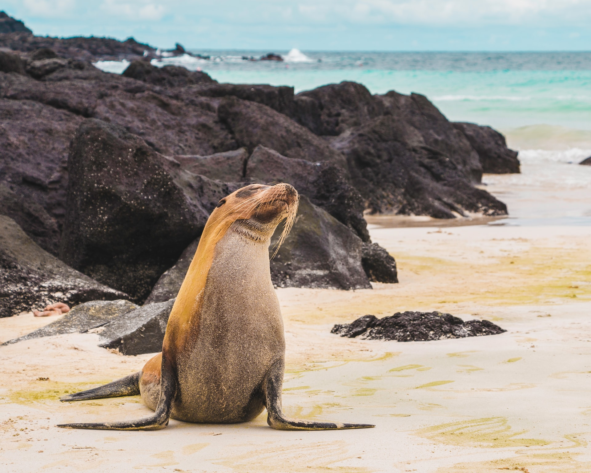

Galápagos
Las Islas Galápagos son un archipiélago situado en el océano Pacífico y son conocidas por su biodiversidad única y su importancia en la historia de la biología. Las islas son el hogar de una gran cantidad de especies endémicas, incluyendo tortugas gigantes, iguanas marinas y una gran variedad de aves. Las Islas Galápagos son un popular destino turístico para aquellos interesados en la naturaleza y la vida silvestre, y ofrecen oportunidades para actividades como el buceo, la observación de vida silvestre y senderismo.
